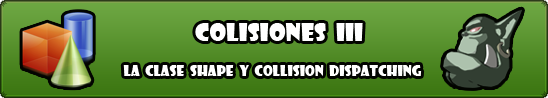
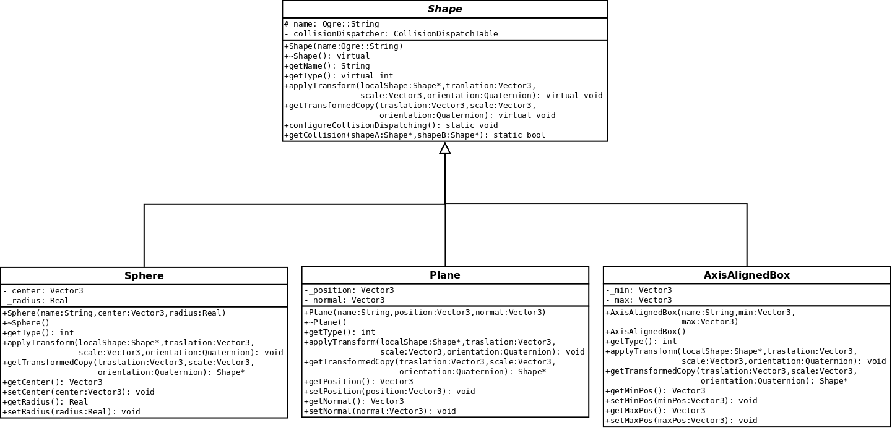
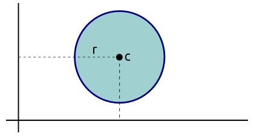
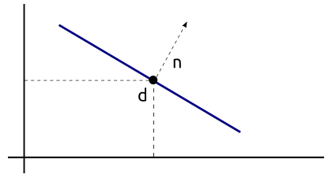
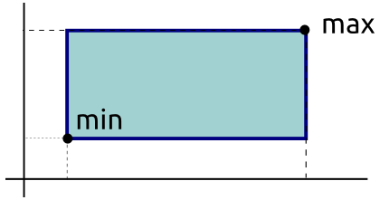
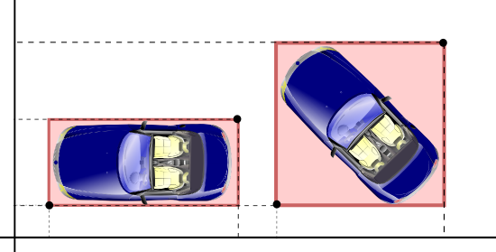

Colisiones III: Shape y Collision Dispatching
Feb 10, 2011 · CommentsGames development

Entregas
- Colisiones I: Introducción, requisitos y alternativas
- Colisiones II: Diseño general de STC
- _Colisiones III: Shape y Collision Dispatching _
Comenzamos la tercera entrega de la serie de artículos sobre **STC, el sistema de detección de colisiones de Sion Tower. En esta ocasión vamos a entrar en detalle en **la clase Shape, la encargada de modelar los volúmenes colisionables básicos entre otras tareas. Los tests de colisión entre formas concretas también pertenecen a esta clase pero por su complejidad los dejaremos para el siguiente artículo.
La clase Shape
Shape es una clase abstracta y como tal no puede instanciarse directamente por lo que otros objetos han de heredar de ella e implementar los métodos convenientes. Shape modela un volumen geométrico genérico colisionable y está pensada para que todas sus implementaciones sean tratadas de manera uniforme.

Collision Dispatching
La clase Shape dispone de un método estático getCollision que recibe dos punteros a Shape y devuelve verdadero o falso en función de si se ha producido o no intersección. Internamente cuenta con otros métodos estáticos para detectar colisiones entre formas concretas, por ejemplo: la intersección entre una esfera y un AABB.
class Shape {
public:
...
static bool getCollision(Shape* shapeA, Shape* shapeB);
...
private:
static bool getCollisionSphereSphere(Shape* shapeA, Shape* shapeB);
static bool getCollisionAABBAABB(Shape* shapeA, Shape* shapeB);
static bool getCollisionPlanePlane(Shape* shapeA, Shape* shapeB);
static bool getCollisionSphereAABB(Shape* shapeA, Shape* shapeB);
static bool getCollisionPlaneSphere(Shape* shapeA, Shape* shapeB);
static bool getCollisionPlaneAABB(Shape* shapeA, Shape* shapeB);
};
El Collision Dispatching es la tarea de seleccionar el test de colisión apropiado a partir de dos formas cuyo tipo desconocemos. En principio se podría pensar en emplear muchos bloques if con dynamic_cast capturando posibles excepciones para aseguramos de que seleccionamos los tipos apropiados. No obstante, ese tipo de casting son operaciones extremadamente costosas que no podemos permitirnos en un punto tan crítico como este. Estuve mucho tiempo dándole vueltas hasta dar con un sistema seguro, sencillo y eficiente de RTTI.
Es posible conocer la clase a la que pertenece una forma génerica incorporando un método virtual puro en Shape. Cada especialización está obligado a implementarlo, devolviendo un valor de un enumerado indicando su tipo.
class Shape {
public:
...
enum Type {SPHERE = 1, AABB = 2, PLANE = 3};
virtual int getType() const = 0;
...
};
class Sphere {
public:
...
int getType() const {return SPHERE;};
...
};
Podemos tener una tabla estática que dados dos tipos de formas nos devuelva el método que efectúa el test de colisión entre ambas. En cada test de colisión se puede hacer un static_cast sin temor a encontrar con problemas ya que hemos comprobado el tipo con anterioridad. static_cast es mucho más rápido que dynamic_cast al no hacer comprobaciones.
No vamos a manejar punteros a función sino que haremos uso de las mágicas boost::function y boost:bind. Esto nos permitirá encapsular un método en un objeto y llamarlo posteriormente con el operador (). Si no conoces Boost deberías echarle un ojo ya que muchos de sus componentes entrarán en el próximo estándar de C++. El año pasado, mi compañero José Tomás Tocino impartió un taller de esta biblioteca, podéis encontrar los materiales aquí. Para la tabla utilizaremos boost::unordered_map, similar a std::map pero mucho más eficiente.
class Sphere:
public:
...
static void configureCollisionDispatching();
...
private:
...
typedef boost::function<bool (Shape*, Shape*)> CollisionCheckFunction;
typedef boost::unordered_map<int , boost::unordered_map<int, CollisionCheckFunction> > CollisionDispatchTable;
static CollisionDispatchTable _collisionDispatcher;
};
El método configureCollisionDispatching se encarga de inicializar la tabla que asocia dos tipos con el método que implementa el test de colisión. Es necesario llamar a este método al comienzo de la aplicación aunque la clase CollisionManager ya lo hace por tí.
void Shape::configureCollisionDispatching() {
_collisionDispatcher[SPHERE][SPHERE] = boost::bind(&Shape::getCollisionSphereSphere, _1, _2);
_collisionDispatcher[AABB][AABB] = boost::bind(&Shape::getCollisionAABBAABB, _1, _2);
_collisionDispatcher[PLANE][PLANE] = boost::bind(&Shape::getCollisionPlanePlane, _1, _2);
_collisionDispatcher[AABB][SPHERE] = boost::bind(&Shape::getCollisionSphereAABB, _1, _2);
_collisionDispatcher[AABB][PLANE] = boost::bind(&Shape::getCollisionPlaneAABB, _1, _2);
_collisionDispatcher[SPHERE][AABB] = boost::bind(&Shape::getCollisionSphereAABB, _1, _2);
_collisionDispatcher[SPHERE][PLANE] = boost::bind(&Shape::getCollisionPlaneSphere, _1, _2);
_collisionDispatcher[PLANE][AABB] = boost::bind(&Shape::getCollisionPlaneAABB, _1, _2);
_collisionDispatcher[PLANE][SPHERE] = boost::bind(&Shape::getCollisionPlaneSphere, _1, _2);
}
De esta forma conseguimos un Collision Dispatching muy eficiente, cómodo y extensible.
Formas disponibles
Como habréis deducido por los diagramas de clases, la versión 0.1 de STC incorpora tres tipos de formas diferentes: Sphere, Plane y AxisAlignedBox. A continuación vemos las distintas formas junto a su representación interna y un pequeño diagrama.
La esfera se representa por un punto (centro) y un real (radio) tal y como se muestra en el siguiente esquema. Es una forma sencilla que permite tests de colisión muy rápidos. Es muy común representar formas utilizando cuatro números reales ya que los chips gráficos están optimizados para hacer operaciones en paralelo con cuatro datos.

El plano está formado por un punto (distancia con respecto al origen) y un vector (normal o perpendicular a sí mismo). Podéis visualizarlo en el siguiente esquema.

Existen dos tipos de cajas: las AxisAlignedBox y las OrientedBox. Las primeras, como indica su nombre, siempre están alineadas con los ejes y no presentan rotación. En cambio, las segundas son volúmenes rotados. Las cajas alineadas con los ejes las representamos a través de dos puntos (mínimo y máximo) como podéis ver en el siguiente diagrama.

Las AABB ofrecen tests de colisión sencillos pero no funcionan bien con objetos que rotan. Al no poder rotar la caja debemos reajustarla con la consecuente pérdida de precisión, en algunos casos inaceptable. El siguiente esquema muestra a un coche y su AABB de colisión en ambos estados: sin rotar y tras ser rotado.

Extendiendo la clase Shape
Para crear nuevas formas sólo hay que elegir la representación deseada e implementar los siguientes métodos virtuales puros de la clase Shape:
class Shape {
public:
virtual int getType() const = 0;
virtual void applyTransform(
Shape* localShape,
const Ogre::Vector3& traslation = Ogre::Vector3::ZERO,
const Ogre::Vector3& scale = Ogre::Vector3::UNIT_SCALE,
const Ogre::Quaternion& orientation = Ogre::Quaternion::IDENTITY) = 0;
virtual Shape* getTransformedCopy(
const Ogre::Vector3& traslation = Ogre::Vector3::ZERO,
const Ogre::Vector3& scale = Ogre::Vector3::UNIT_SCALE,
const Ogre::Quaternion& orientation = Ogre::Quaternion::IDENTITY) = 0;
};
El método applyTransform transforma la forma actual a partir de localShape incluyendo desplazamiento, escala y rotación. El método getTransformedCopy devuelve una copia de sí misma tras aplicar la transformación. Esto se utiliza para traducir formas de local space a world space. Deberás añadir los tests de colisión que desees y completar la inicialización de la tabla en el método configureCollisionDispatching. Puedo adelantar que para la versión 0.2 de STC (Sion Tower Collisions) estoy implementando la forma OrientedBox y sus correspondientes tests de colisión.
Hasta aquí la tercera entrega de los artículos sobre el sistema de detección de colisiones de Sion Tower.